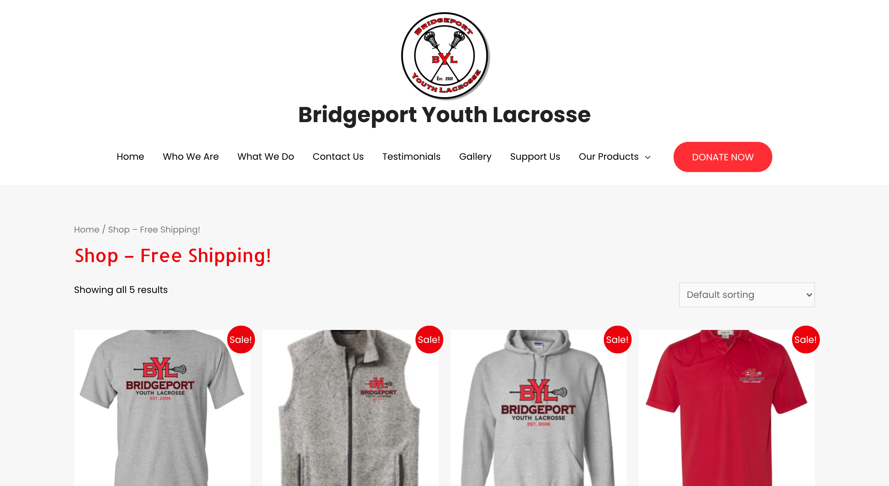
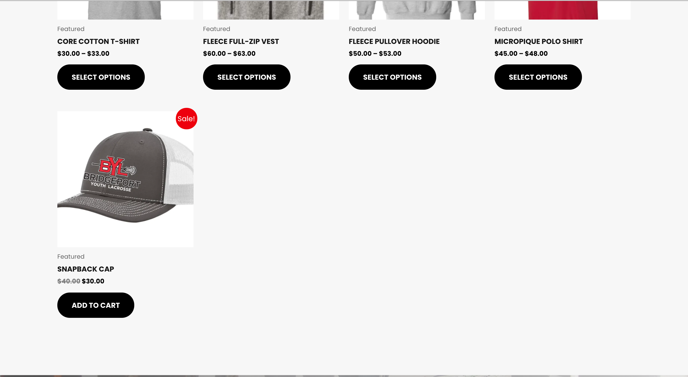
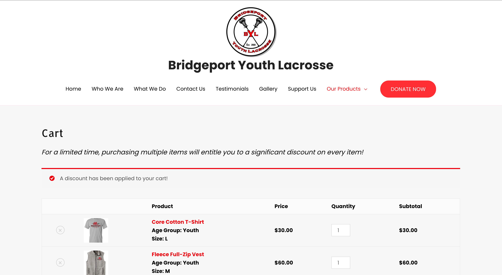
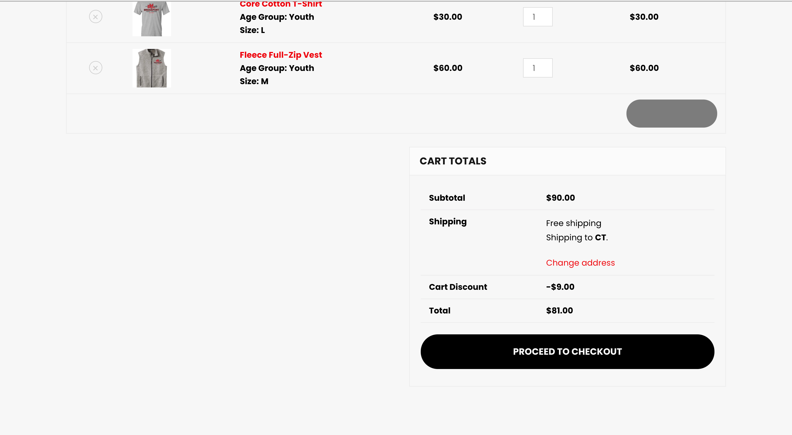
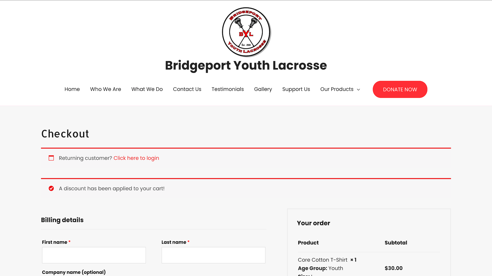
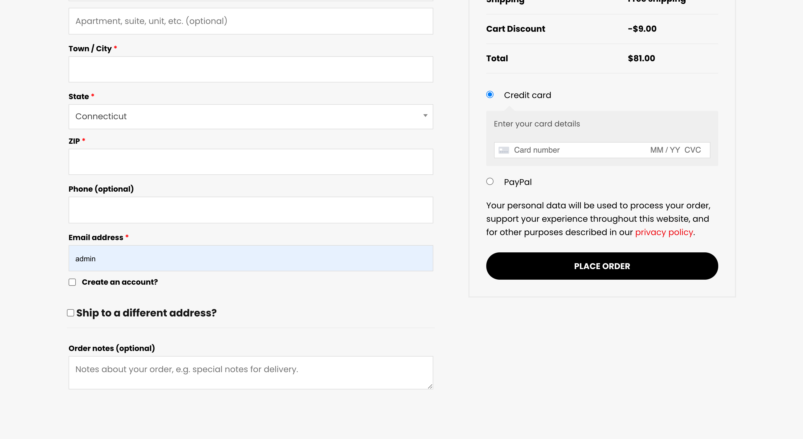

BYL Store Setup
Shop Page
 
Cart Page
 Checkout Page
 My task was to type my own code and use Bootstrap to build a prototype of the YouTube homepage based on the screenshot linked here.
I needed to include:
- The YouTube logo
- 8 video thumbnails arranged in a grid of 2 rows by 4 images (for a total of 8 thumbnail images)
- Locate my own images to use via Google Image Search and resize them to a standard size (either exactly matching YouTube thumbnails or something close)
- Fill in my own text for videos and include all the same type of metadata for each video as is included in the YouTube homepage
I used Bootstrap components to create the search box and submit button as well as the navigation tabs at the top and div tags to create sections for the 8 thumbnails. My YouTube homepage mockup included all major elements represented on the page, but the visual styling and sophistication did not need to match 100% because it was a prototype. The image above was my finished result.